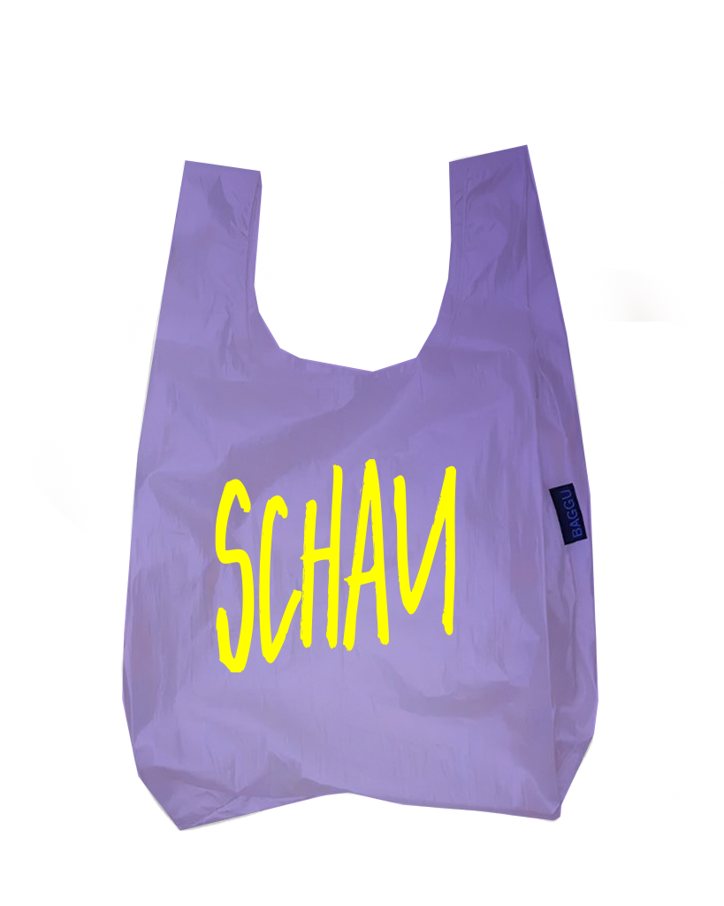
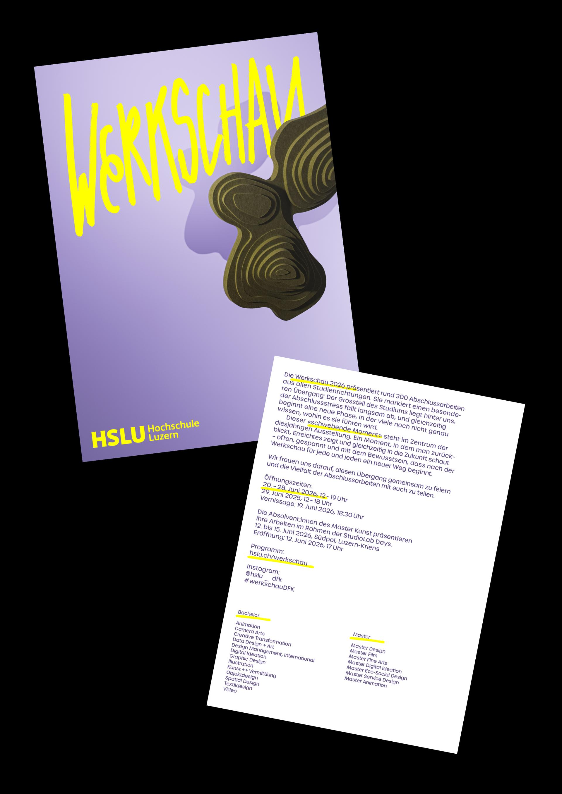

Exhibition as a moment of limbo. The exhibition represents the transition between completing one‘s studies and an uncertain future. The pressure is off, paths diverge, and a feeling of limbo arises – between relief, uncertainty and new beginnings. This is my concept for the HSLU‘s 2026 exhibition. A poster, animation, merchandise and invitation cards were designed for this purpose.
2nd BA Graphic Design, 2025
InDesign, Illustrator, Blender, Photoshop, After Effects
Lecturers: Jonas Wandeler, Claudio Gasser (Atlas Studio), Samuel Weidmann

